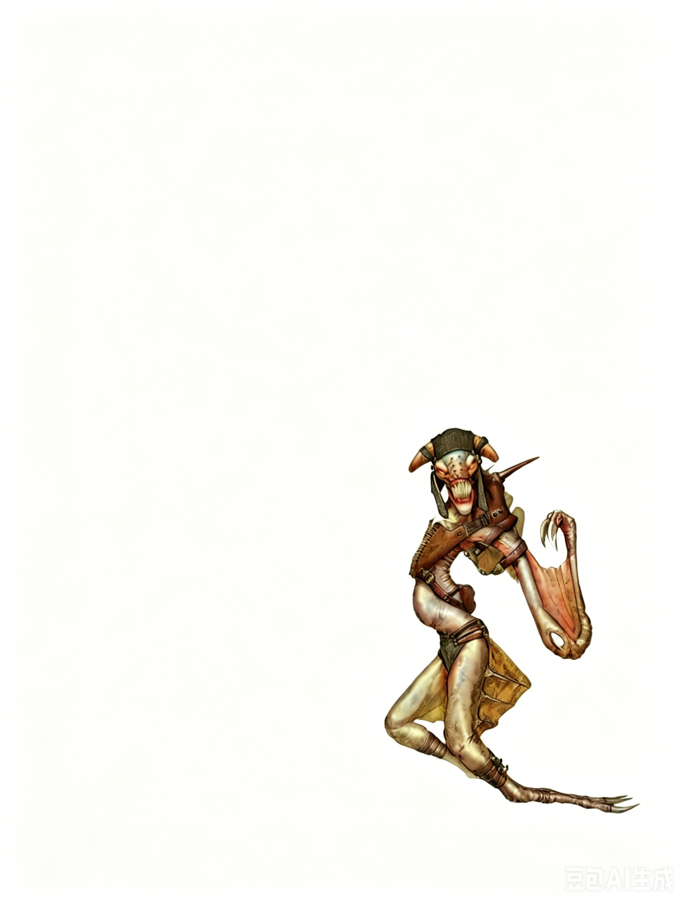

小型异界生物（跨位面） | 挑战级数 1这是一种瘦削、四肢修长的生物，覆盖着皮革般的薄膜，漂浮于空中。其翅膀尖端延伸出短而锋利的骨质刀刃，头颅狭长，点缀着节瘤状的角状突起，口中满是尖锐的利齿。
风刃兽 ―― 始终混乱邪恶。
| 生命骰 | 2d8（9HP） |
| 先攻 | +2 |
| 速度 | 10 英尺，攀爬 10 英尺，飞行 40 英尺（良好） |
| 防御等级 | 13，接触 13，措手不及 11 |
| 近战攻击 | 2次爪击 +4 (1d4+1，19�C20重击) 和 1次啮咬 -1 (1d6，19�C20重击) |
| 占据/触及 | 5 英尺 / 5 英尺 |
| 特殊攻击 | 致命重击 (Fearsome Critical)，撕裂 (Rend 2d4+2) |
| 特殊能力 | 黑暗视觉 60 英尺，锐利感官 (Keen Senses) |
| 豁免 | 强韧 +3，反射 +5，意志 +4 |
| 属性 | 力量 13，敏捷 15，体质 11，智力 8，感知 12，魅力 6 |
| 技能 | 攀爬 +14，潜行 +6，知识 (位面) +4，聆听 +6，躲藏 +6，搜索 +6，生存 +6 (在异位面 +8) |
| 专长 | 飞越，精通重击 (爪击 B)，精通重击 (啮咬 B) |
| 语言 | 风之歌 (Windsong)，风族语 (Auran) |
锐利感官 (Keen Senses, Su)：风刃兽在昏暗环境下的视觉是人类的四倍。
撕裂 (Rend, Ex)：当风刃兽两次爪击都命中目标时，它会抓住对手并撕裂其血肉，自动造成额外 2d4+2 点伤害。
致命重击 (Fearsome Critical, Su)：风刃兽每次重击都会令 10 英尺内的所有生物进行一次 DC 9 的意志豁免，未通过者会陷入战栗 1 轮（恐惧效果，影响心灵）。此豁免 DC 基于魅力。
技能：风刃兽在攀爬检定中有 +8 种族加值。即使在匆忙或受威胁时，风刃兽也可以选择攀爬检定中取 10。
风刃兽是风刃族的斥候与猎手。它们成群行动（通常多达十二只），捕猎猎物供自己食用或为主人带来乐趣。它们由屠杀之神厄瑞斯努创造，天性嗜血、凶残，热衷战斗与鲜血，永远追求新的刺激与暴力形式。
策略与战术：风刃兽（Windrazors）是群体猎食者。它们协作寻找猎物，并一同将其击杀。
在战斗中，风刃兽会充分利用其“飞越”能力（Flyby Attack），分批次进攻：一波波地接近敌人，迅速发起爪击攻击，然后飞离。这种策略使得只有提前准备攻击的敌人才能在近战中反击，同时最大限度地提升风刃兽的攻击效率。
由于其残暴主神的影响，风刃兽倾向于对受伤的敌人发动全力攻击（包括造成“撕裂”效果的可能性）。否则，它们只会选择待在防御力较弱、容易命中的敌人附近（例如未受魔法防护的目标）。